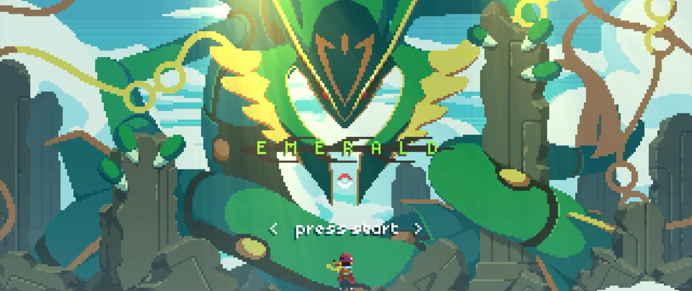
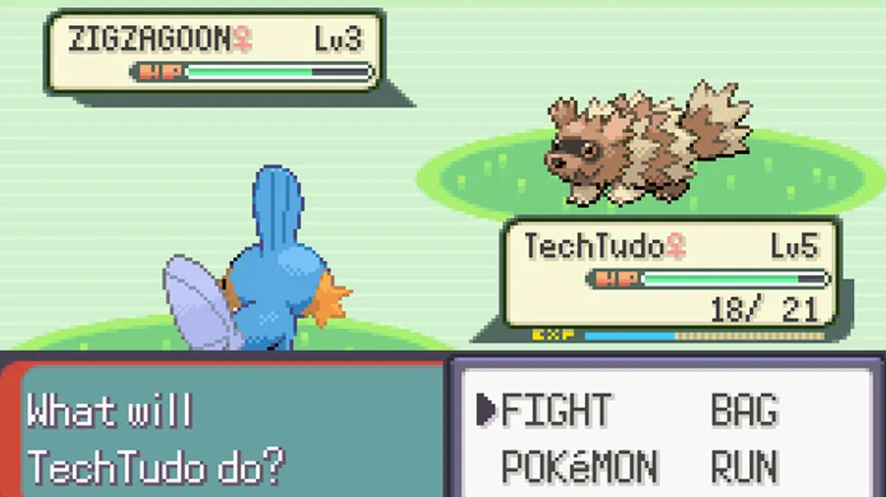
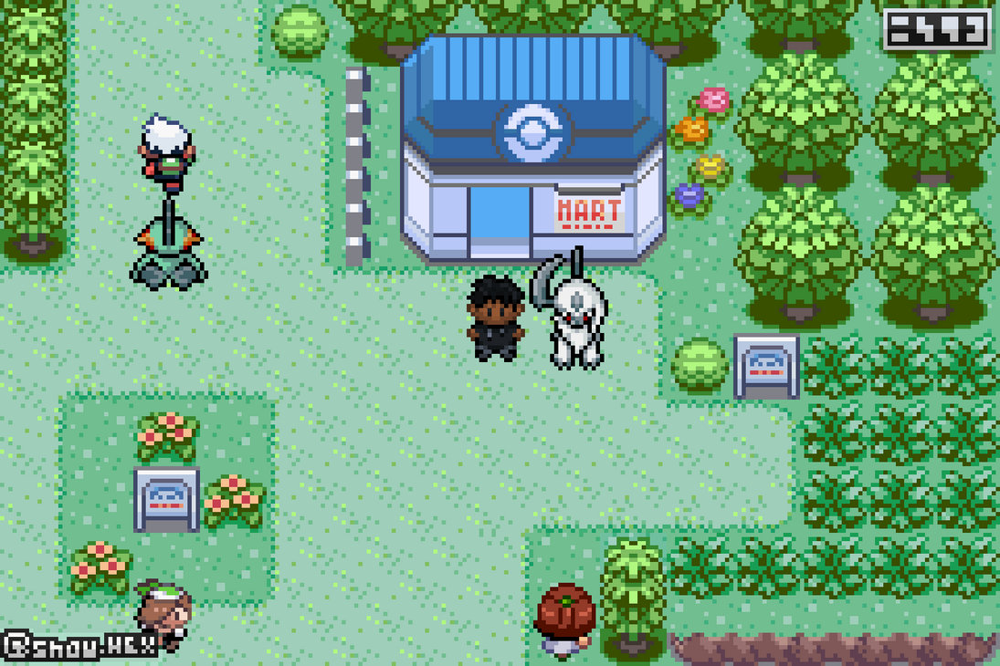
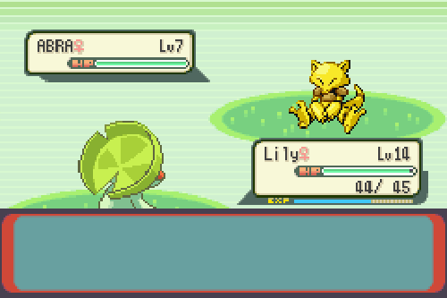

OS MELHORES JOGOS DE TODOS! By Nintendo
Desenvolvido para fins educativos todos os materiais apresentados neste site foram tirados da internet
PRESERVAÇÃO DA PÁGINA - TODOS OS DIREITOS DE POKEMON E SEUS LUCROS PERTECEM A NINTENDO
- Xbox
- Playstation
- Página inicial
- Multi Plataforma
Por console
Nintendo
Em relação aos jogos da Nintendo devo adimitir que não joguei tantos jogos, joguei apenas Pokémon Emerald e é sobre ele que irei falar kk
POKÉMON EMERALD

Pokémon Emerald Version (ポケットモンスター エメラルド Poketto Monsuta Emerarudo?, tradução: Monstro de Bolso Esmeralda) é um jogo eletrônico de RPG de 2004, desenvolvido pela Game Freak, publicado pela The Pokémon Company e pela Nintendo para o Game Boy Advance. Foi lançado pela primeira vez no Japão em 2004 e mais tarde lançado internacionalmente em 2005. É uma versão aprimorada de Pokémon Ruby e Sapphire e é o jogo final da terceira geração da série de jogos eletrônicos Pokémon.

A jogabilidade e os controles praticamente não foram alterados em relação aos jogos anteriores da série; os jogadores controlam um Treinador Pokémon de uma perspectiva aérea. Tal como acontece com Ruby e Sapphire, o objetivo geral do jogador é atravessar a região de Hoenn e conquistar uma série de oito Ginásios Pokémon para desafiar a Elite dos Quatro e seu Campeão, enquanto a subtrama principal é derrotar duas organizações criminosas que tentam dominar um lendário Pokémon para seus próprios objetivos. Junto com Pokémon que estreou em Ruby e Sapphire, o jogo incorpora Pokémon Gold e Silver não apresentada em Ruby e Sapphire.
Recepção da Emerald foi geralmente positiva após a lançamento.
JOGABILIDADE

A jogabilidade em Emerald é basicamente a mesma que em Ruby e Sapphire. Muito do jogo ocorre em um estilo indireto; os personagens dos jogadores podem se mover em quatro direções e falar com outras pessoas no mundo superior. Os jogadores podem encontrar Pokémon selvagens caminhando na grama, surfando em seus Pokémon, caminhando por cavernas e outros meios. Eles também podem lutar contra Pokémon de outros treinadores. Quando isso acontece, o jogo muda para uma tela de batalha onde os jogadores e seus Pokémon são vistos na parte frontal esquerda da tela, enquanto os oponentes são vistos na parte posterior direita. As estatísticas do Pokémon e de seus treinadores são mostradas ao lado de cada participante; essas estatísticas incluem os níveis do Pokémon, o número de Pokémon de cada treinador (de um a seis), a saúde do Pokémon e quaisquer efeitos de status, como veneno, paralisia ou queimadura. Os treinadores enviam o primeiro Pokémon em seu grupo e eles se revezam no ataque, onde o primeiro ataque é determinado geralmente pela velocidade dos dois Pokémon. Os jogadores podem escolher uma das quatro opções: Lutar, Sacola, Trocar e Correr. Cada Pokémon tem até quatro movimentos que podem ser usados, que têm diferentes efeitos, número de usos e tipos, como Grama ou Psíquico. Quando um Pokémon atinge o 0 pontos de vida (HP), eles desmaiam, forçando o treinador do Pokémon a mudar. Quando um treinador fica sem Pokémon, a batalha termina. Quando um Pokémon controlado por humanos vence uma batalha, o Pokémon ganha experiência. Experiência suficiente fará com que esse Pokémon ganhe um nível mais alto, o que garante estatísticas atualizadas–ataque, defesa, ataque especial, defesa especial, HP e velocidade– e às vezes garante novos movimentos.

Certas batalhas permitem batalhas dois contra dois; certos movimentos foram projetados para oferecer suporte a parceiros, enquanto outros movimentos são capazes de atacar dois ou mais Pokémon. Ao contrário de Ruby e Sapphire, em que o jogador lutava com dois treinadores específicos, o Emerald permitia que o jogador tivesse uma batalha 2-a-2 com dois treinadores, ambos os quais normalmente poderiam lutar separadamente. Cada Pokémon tem uma habilidade que geralmente ajuda na batalha, como habilidades que tornam um Pokémon mais poderoso se ele estiver perto de desmaiar. Pokémon selvagens encontrados pelos jogadores podem ser capturados usando itens chamados Pokébolas, que têm maior chance de sucesso quanto mais fraco for o Pokémon selvagem. Os jogadores podem lutar e negociar com outros usando qualquer um da terceira geração de jogos de Pokémon, incluindo Emerald, Ruby, Sapphire, FireRed e LeafGreen, vinculando seus sistemas Game Boy Advance. Isso pode ser feito usando um cabo de link Game Boy Advance ou o adaptador sem fio fornecido com FireRed e LeafGreen. Também é compatível com Pokémon XD: Gale of Darkness. Isso permite que os jogadores negociem por Pokémon que normalmente não são obtidos no Emerald.
Além do estilo tradicional de batalha e mundo superior, os jogadores Pokémon também podem participar de competições Pokémon onde podem tentar e ganhar em cinco categorias de concurso: "Legal", "Beleza", "Fofo", "Inteligente" e "Resistente" competições. Os personagens dos jogadores recebem um dispositivo chamado PokéNav, que permite aos jogadores visualizar o mapa-múndi, verificar as estatísticas de competição de seus Pokémon e fazer e receber ligações de treinadores que encontraram e com quem podem conversar ou planejar uma batalha. Isso substitui uma função chamada "Olhos do Treinador", que permite aos jogadores registrar certos treinadores e ver quando eles estão com vontade de lutar. Isso também permite que os jogadores lutem contra os Líderes de Ginásio, uma habilidade não encontrada em jogos anteriores de Pokémon. inclui vários outros novos recursos e mudanças, como animações de Pokémon em batalha e uma área chamada Battle Frontier, que é uma expansão da Battle Tower encontrada em jogos anteriores. Um homem que os jogadores encontram várias vezes ao longo do jogo irá eventualmente permitir que eles acessem a Battle Frontier após derrotar o Campeão da Liga Pokémon. As Battle Frontier apresenta a já mencionada Battle Tower, além de seis novas áreas. Completar essas áreas premia os jogadores com "Pontos de Batalha", que podem ser gastos em prêmios para usar dentro e fora da batalha. A versão japonesa oferece compatibilidade com o Nintendo e-Reader; no entanto, este foi cortado para o lançamento em inglês devido à sua falta de sucesso. Também é destaque a área do Trainer Hill que, na versão japonesa, é compatível com o e-Reader. Pokémon raros que se originaram de jogos anteriores de Pokémon como Mew, Lugia e Ho-Oh foram disponibilizados por meio de um evento no jogo.
ENREDO
O cenário e a história permanecem basicamente os mesmos de Ruby e Sapphire. Os jogadores podem escolher entre um menino ou uma menina, ambos com novos trajes com um esquema de cores verde, e um dos três Pokémon antes de partirem de sua cidade natal para o resto do mundo do jogo.
Os jogadores têm a tarefa de preencher seus Pokédex, capturando diferentes espécies de Pokémon e evoluindo-as. Eles também têm a tarefa de completar oito desafios de Ginásio e derrotar a Elite dos Quatro e seu campeão lutando contra seus Pokémon. Ao longo do caminho, eles fazem dois rivais: May ou Brendan, o filho do Pokémon Professor Birch, e Wally, uma criança tímida de Petalburg que o jogador ajuda a capturar seu primeiro Pokémon, um Ralts. Eles também encontram Wallace, o Campeão da região de Hoenn.

Ao longo de sua jornada, eles enfrentam ambos Equipe Magma e Equipe Aqua, que originalmente só podiam ser enfrentados em Ruby e Sapphire, respectivamente. Ambos têm o objetivo de mudar o mundo que acreditam beneficiar Pokémon–Magma deseja expandir a Magma e Aqua deseja expandir o mar– e ambos planejam realizar seus respectivos objetivos invocando os lendários Pokémon Groudon e Kyogre, respectivamente. Ambas as equipes fazem esforços repetidos para alterar a paisagem. A Equipe Magma tenta fazer um vulcão entrar em erupção e a Equipe Aqua tenta roubar um Pokémon que altera o clima.
Entre a visita do jogador à sétima e oitava academias, ambas as equipes invocam seus Pokémon lendários, respectivamente procurados, com orbes místicas roubadas do Monte. Pira; no entanto, o Pokémon se recusa a obedecer a qualquer uma das equipes e começa a lutar, o que coloca o mundo em um estado de constante mudança de secas e chuvas intensas. O jogador sobe uma torre para invocar o lendário Pokémon Rayquaza, que domina a fúria dos outros dois Pokémon.
Depois que o jogador derrota a Elite dos Quatro, eles são capazes de encontrar dois Pokémon voando sobre Hoenn, Latias e Latios, e podem acessar uma área chamada Battle Frontier, que adiciona vários novos desafios para o jogador. O jogador ganha acesso a uma batalha com o ex-Campeão Steven Stone em Meteor Falls, que usa uma versão aprimorada de sua equipe em Ruby e Sapphire. O jogador agora é capaz de pegar Kyogre e Groudon, que podem ser rastreados conversando com o cientista no Weather Institute.